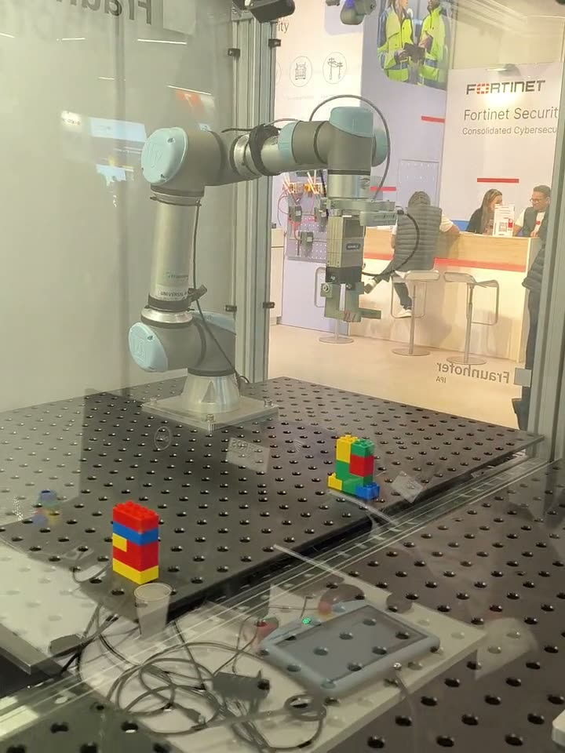

Nuremberg Messe 2025
● Headline project · 2025 · Fraunhofer IPA
LEGO Pose Estimation at Nuremberg Messe
An end-to-end ROS 2 pipeline that sees LEGO bricks with an Intel RealSense camera, estimates their pose and sorts them by colour with a robot arm. Perception, Behavior Trees and robot control run in one loop, fully dockerized, as a continuous public demonstration at Nuremberg Messe 2025.
Result Ran continuously as a public demo in front of trade-fair visitors.